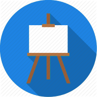

Svaki složeniji crtež mora da sadrži sledeće funkcije:
- beginPath(),
- closePath(),
- stroke(),
- fill().
Kao što znamo složeniji crteži se sastoje od raznih geometrijskih oblika, kao što su linije, pravougaonici, krugovi, itd.
BeginPath() je zapravo kontejner koji sadrži definicije svih geometrijskih oblika koji skupa definišu jedan crtež.
ClosePath() zatvara formu crteža. Nije uvek potrebno koristiti closePath ali da mnogo ne komplikujemo bolje je uvek koristiti.
Stroke() je funkcija koja se koristi za crtanje kontura, a fill( ) za crtanje ispunjenih površina. Evo jednog crteža trougla koji demonstrira upotrebu beginPath:
function crtaj() {
canvas = document.getElementById("kocke");
if (canvas.getContext) {
ctx = canvas.getContext("2d");
ctx.beginPath();
ctx.moveTo(75,50);
ctx.lineTo(100,75);
ctx.lineTo(100,25);
ctx.fill();
}
}
Renderovani prikaz koda
moveTo() je vrlo korisna funkcija, koja zapravo ne definiše nikakv geometrijski oblik, ali može da pomera sve moguće oblike. Princip rada je takav, da na primer imate olovku na stolu, i sad je vi uzmete i pomerite je sa jednog mesta na drugo. Znači, kad definišemo neki oblik pmoću beginPath() funkcijom i kad se pozove ta funkcija onda se crtež crta u koordinati (0, 0). Medjutim mi možemo pomoću moveTo() funkcijom da pomeramo taj crtež u koju god želimo koordinatu unutar našeg platna za crtanje. To je jedan korisan način upotrebe ali mi možemo pomerati ne samo ceo crtež, već i pojedine geometrijske oblike unutar same defincije nekog crteža. Evo primera:
function crtaj() {
canvas = document.getElementById("kocke");
if (canvas.getContext) {
ctx = canvas.getContext("2d");
ctx.beginPath();
ctx.arc(75,75,50,0,Math.PI*2,true); // definisanje spoljnog celog kruga
ctx.moveTo(110,75);
ctx.arc(75,75,35,0,Math.PI,false); // definisanje usta
ctx.moveTo(65,65);
ctx.arc(60,65,5,0,Math.PI*2,true); // levo oko
ctx.moveTo(95,65);
ctx.arc(90,65,5,0,Math.PI*2,true); // desno oko
ctx.stroke();
}
}
Renderovani prikaz koda
lineTo(x, y) – Funkcija za crtanje linije. Kao što znamo, da bi smo nacrtali liniju potrebno je definisati dve tačke. Funkcija lineTo() definiše jednu tačku a druga tačka je koordinatni početak. E sad ako želimo liniju koja ne prolazi kroz koordinatni početak onda koristimo funkciju moveTo() za izmeštanje koordinatnog početka. Evo primer korišćenja linija u crtanju dva trougla od kojih je jedan isunjen a drugi samo kontura:
function crtaj() {
canvas = document.getElementById("kocke");
if (canvas.getContext) {
ctx = canvas.getContext("2d");
// Ispunjen trougao
ctx.beginPath();
ctx.moveTo(25,25);
ctx.lineTo(105,25);
ctx.lineTo(25,105);
ctx.fill();
// Kontura trougao
ctx.beginPath();
ctx.moveTo(125,125);
ctx.lineTo(125,45);
ctx.lineTo(45,125);
ctx.closePath();
ctx.stroke();
}
}
Renderovani prikaz koda
arc(x, y, poluprečnik, početakKruga, krajKruga, smer) – funkcija za crtanje krugova i isečaka krugova (lukova). X i Y su koordinate tačke centra kruga. Smer crtanja luka je suprotan od smera kretanja na satu ako je true, a ako je false onda je u smeru kretanja kazaljke na satu. PočetakKruga i KrajKruga su parametri koji definišu početak i kraj luka kruga a mere se u radijanima. Da biste pretvorili uglove u stepenima u uglove u radijanima koristite sledeći JavaScript izraz:
radijani = (Math.PI/180) * stepeni;
Evo primera za više slučajeva krugova:
function crtaj() {
canvas = document.getElementById("kocke");
if (canvas.getContext) {
ctx = canvas.getContext("2d");
for(var i=0; i<4; i++){
for(var j=0; j<3; j++){
ctx.beginPath();
x = 25 + j*50; // x coordinate
y = 25 + i*50; // y coordinate
radius = 20; // Arc radius
startAngle = 0; // Starting point on circle
endAngle = Math.PI+(Math.PI*j)/2; // End point on circle
anticlockwise = i%2==0 ? false : true; // clockwise or anticlockwise
ctx.arc(x,y,radius,startAngle,endAngle, anticlockwise);
if (i<1){
ctx.fill(); }
else {
ctx.stroke();
}
}
}
}
}
Renderovani prikaz koda